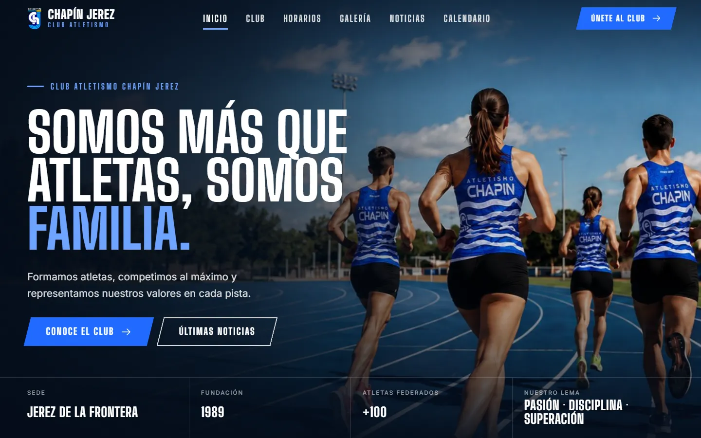
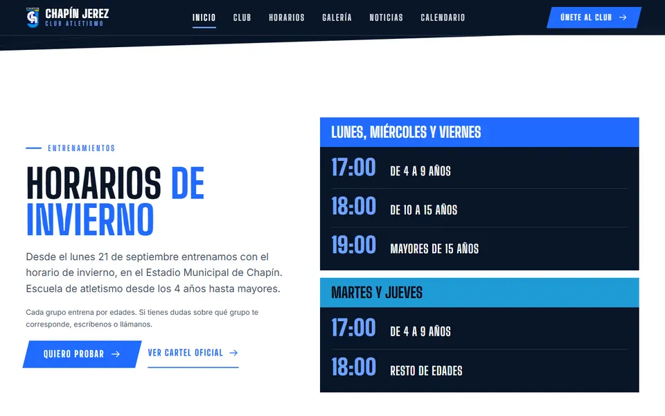
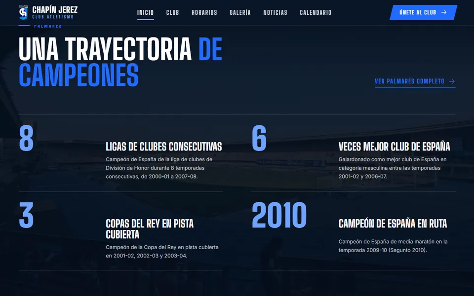
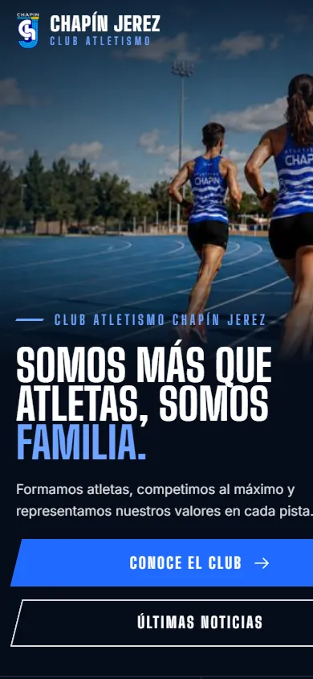

01 · Web de club · Proyecto real para cliente
Club Atletismo Chapín Jerez
Web completa de un club de atletismo de Jerez de la Frontera, pensada para que socios y familias encuentren horarios, noticias y contacto sin esfuerzo.
Horarios por categoría, calendario y contacto a un par de toques desde el móvil.
chapinjerez.es




Qué incluye
- Club, horarios por categorías, calendario, noticias, galería de competiciones y contacto.
- Contacto por email y WhatsApp, mapa del estadio y avisos legales de privacidad y cookies.
- Diseño responsive para móvil, tablet y escritorio.
Decisiones de frontend
- Imágenes con
srcset, carga diferida y prioridad alta en la portada. - Menú móvil con foco atrapado, cierre con Escape y
inertcuando está cerrado. - Galería sobre el elemento
<dialog>nativo, navegable con flechas.
Tecnologías
Diseño y desarrollo en solitario, con recogida de requisitos y cambios con el cliente.
Ver web publicada de Club Atletismo Chapín Jerez (se abre en una pestaña nueva)